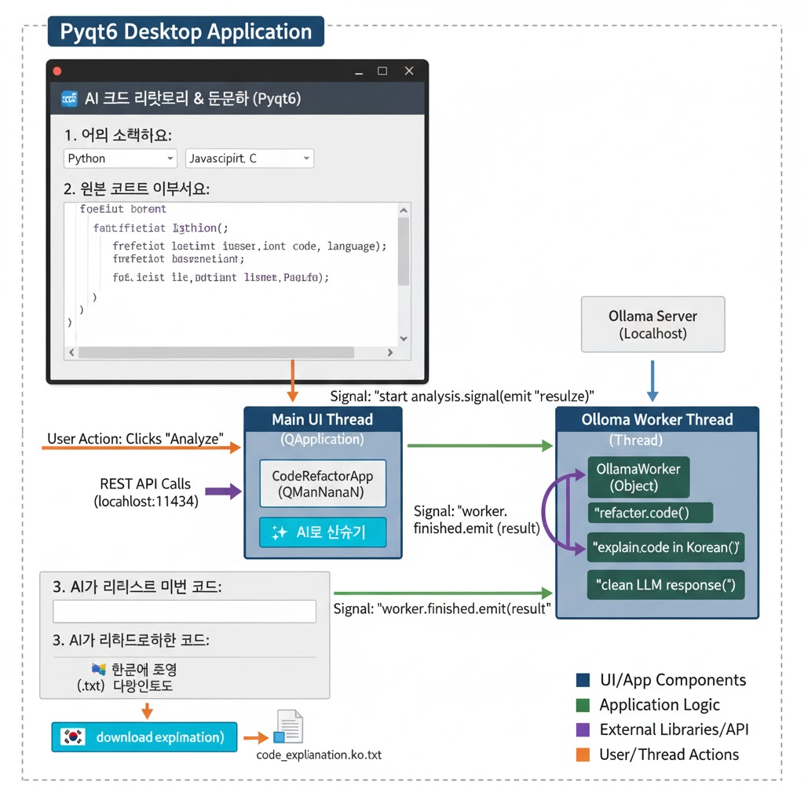

About Me
저는 어떠한 코드를 구현할 때 최대한 간단하게 구현해서 알아보기 쉽고, 사용하기 쉽게 구현하는 것을 추구하는 개발자입니다. 주로 React와 JavaScript를 주로 사용하며, 웹페이지 개발을 해왔습니다.
이 프로젝트를 통해 제가 AI를 사용하여 어느정도까지 개발이 가능한지 확인해보고 싶었으며, 이 프로젝트가 현재 개발자들에게 어떤 영향을 미칠지에 대해 궁금했기에 해당 프로젝트를 시행하게 되었습니다.
Skills
Frontend
Backend
DevOps & Tools
Project: AI 리팩토링 매니저
문제 정의 (Problem)
기존에 코드 리팩토링을 위해서 CHAT-GPT나 Gemini를 사용하기 위해서는 네트워크 환경이 꼭 필요했습니다. 하지만 네트워크 환경이 없는 곳에서도 코드를 개발하는 상황은 있을 것이라고 생각했습니다. 네트워크 없이 코드를 리팩토링하고, 구현한 코드에 대한 설명을 txt 파일로 다운할 수 있는 응용프로그램을 만드는 것이 목표였습니다.
아키텍처 (Architecture)
문제 해결을 위해 ollama의 LLM인 llama3:8b을 핵심 전략으로 채택했으며, LLM을 파이썬에 연결하고 코드를 구현한 다음에 .exe 파일로 내보내는 방식으로 설계했습니다.
핵심 기능
LLM을 사용한 코드 리팩토링
사용자가 리팩토링을 원하는 코드를 입력하면 LLM을 통해 입력받은 코드를 AI가 리팩토링 하고, 결과를 보여줍니다.
리팩토링한 코드의 설명 문서화
리팩토링한 코드에 대한 설명을 한국어로 문서화해서 txt 파일로 다운받을 수 있습니다.
나의 역할 및 기여
AI가 언어별로 코드를 리팩토링 할 수 있게 프롬포트 작성, 문서화 작업을 할 때 한국어로 작업하도록 수정, 리팩토링 결과가 보다 정확하도록 프롬포트 수정
결과 및 성과
네트워크가 없는 환경에서 리팩토링 환경 구현, 문서화 작업을 통해 코드에 대한 이해력 향상
회고 (Retrospective)
배운 점
LLM을 사용해서 코드를 구현할 때는 프롬포트를 수정하는 것이 대부분이라는 점을 새삼 다시 깨달았습니다.
개선할 점
추후 프롬포트 수정을 통해 리팩토링 결과에 대한 정확도나, 간혹가다 코드의 설명을 문서화하는 과정에서 한국어로 나오지 않는 경우에 대해서 개선하여 버그를 줄이고, 안정성을 높이고 싶습니다.